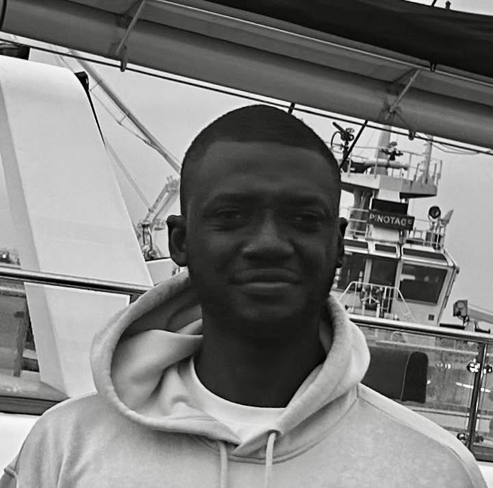

Toufiq Musah
ECE PhD Student
Boston University


News
- Attending ISMRM in Cape Town and presenting on Pediatric Neuroanatomy Segmentation in Ultra-Low-Field MRI, May 2026.
- Presenting at the COMPASS Webinar on Automated 3D Medical Image Segmentation, Sept 2025.
- Won the Brain Tumor Segmentation Challenge at MICCAI in Daejeon, Sep 2025.
- Presenting at the MIRASOL and Deep-Breath Workshop at MICCAI in Daejeon, Sep 2025.
- Attending the African Computer Vision Summer School in Kigali, Jul 2025.
- Hosting a tutorial on Optimisation Techniques at Ghana Data Science Summit, Jun 2025.
About Me
I am an ECE PhD Student at Boston University, with interests in Artificial Intelligence Applications in Health and Medicine. My research spans Computer Vision, Computational Neuroscience, Medical Image Analysis, Multi-Modal Data Integration, and Trustworthy AI.
Research Interests
- Computer Vision
- Medical Image Analysis
- Computational Neuroscience
- Artificial Intelligence in Medicine
Education

PhD Electrical and Computer Engineering
Aug 2026 - PresentBoston University (BU)
MSE Data Science
Aug 2025 - Aug 2026University of Pennsylvania (UPenn)
BSc Biomedical Engineering
Jan 2021 - Nov 2024Kwame Nkrumah University of Science and Technology (KNUST)
Experience
Research & Engineering
Kumasi Centre for Collaborative Research in Tropical Medicine • Oct 2024 - Oct 2025
Research Assistant
Responsible Artificial Intelligence Lab (RAIL) • Oct 2023 - Feb 2024